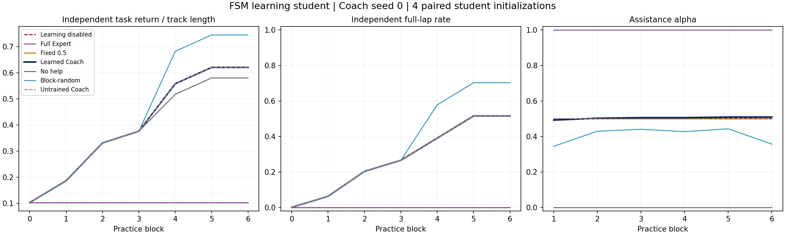
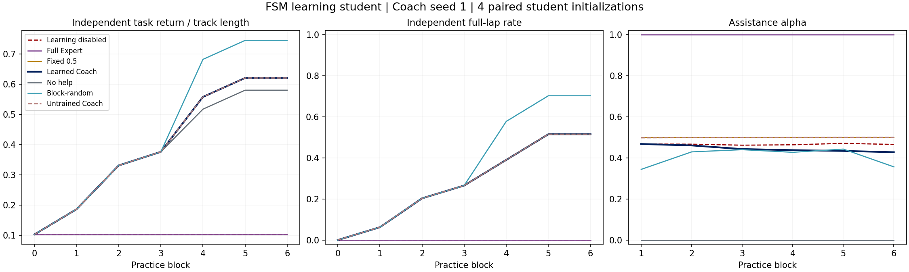
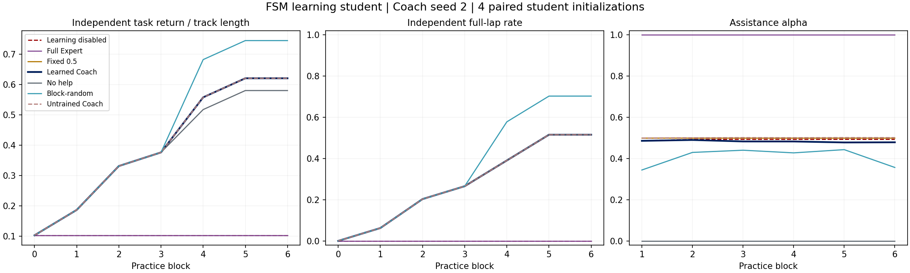
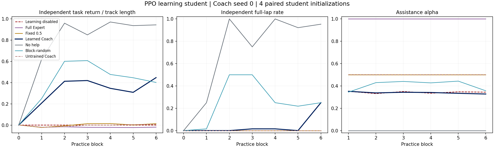
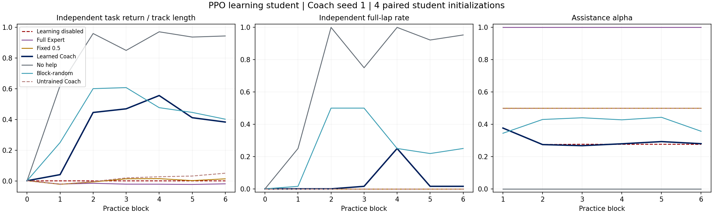
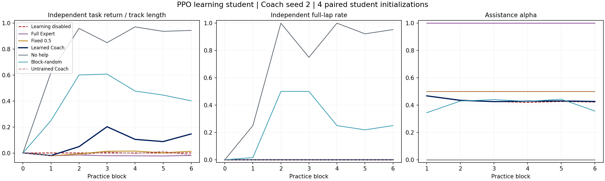

Learning Students
Two distinct synthetic learner mechanisms: an assumed finite-state learning model, and a neural student updated by inner PPO. The outer Coach is PPO in both cases.
These are learning-student pilots, not validated human learning models. Previous spatial alpha maps used frozen students and do not establish teaching benefit. Only completed campaigns appear below; missing seeds are not successes. Student improvement alone is not evidence that the learned Coach outperforms matched controls.
Numerical repair and evidence limits
Earlier FSM evaluations failed the frozen-learning repeatability gate. The failed artifacts were kept. Enabling deterministic GPU execution removed the observed drift without increasing the tolerance. FSM seeds 0/1 and PPO seed 0 retain their original final Coach weights; their complete evaluations were rerun. The remaining seeds were both trained and evaluated with deterministic execution. This post-hoc engineering repair is not an untouched blind test.
Four test-student initializations are shared across Coach seeds. The 16 report starts per student are not 16 independent students. The Coach observes a separate diagnostic exam bank, never the report bank. The public driving demo still runs Manual / Expert, not this learning Coach.
Fixed comparison protocol
- Each intervention covers 51.2 seconds per parallel practice replica, with eight fresh collect/update cycles for PPO. Six blocks per learner. Replicas share learner parameters and are not independent students.
- Reward is the change in independent task return at common exam starts. No assistance cost, assisted reward or assigned skill gain is added.
- Exams remove help, freeze learning, stop at a full lap or failure with a 120-second cap, and cannot change practice state, optimizer or RNG.
- Final checkpoints only. Paired student initializations and exam starts across conditions. No claim of statistical significance or human benefit from these small samples.
- FSM upgrades are explicitly assumed and stochastic; PPO weights update from task reward without imitation targets. Full takeover need not teach a PPO student.
FSM student / Coach seed 0
Original final Coach checkpoint, fully reassessed with deterministic execution.
Final independent score difference: learned minus no help +0.040; learned minus fixed 0.5 +0.000. Frozen-learning control: passed.

All conditions and source data
| Condition | Initial score | Final score | Solo laps | Mean alpha |
|---|---|---|---|---|
| Learning disabled | 0.102 | 0.102 | 0.0% | 0.500 |
| Full Expert | 0.102 | 0.102 | 0.0% | 1.000 |
| Fixed 0.5 | 0.102 | 0.620 | 51.6% | 0.500 |
| Learned Coach | 0.102 | 0.620 | 51.6% | 0.504 |
| No help | 0.102 | 0.580 | 51.6% | 0.000 |
| Block-random | 0.102 | 0.745 | 70.3% | 0.407 |
| Untrained Coach | 0.102 | 0.620 | 51.6% | 0.499 |
FSM student / Coach seed 1
Original final Coach checkpoint, fully reassessed with deterministic execution.
Final independent score difference: learned minus no help +0.040; learned minus fixed 0.5 +0.000. Frozen-learning control: passed.

All conditions and source data
| Condition | Initial score | Final score | Solo laps | Mean alpha |
|---|---|---|---|---|
| Learning disabled | 0.102 | 0.102 | 0.0% | 0.466 |
| Full Expert | 0.102 | 0.102 | 0.0% | 1.000 |
| Fixed 0.5 | 0.102 | 0.620 | 51.6% | 0.500 |
| Learned Coach | 0.102 | 0.620 | 51.6% | 0.445 |
| No help | 0.102 | 0.580 | 51.6% | 0.000 |
| Block-random | 0.102 | 0.745 | 70.3% | 0.407 |
| Untrained Coach | 0.102 | 0.620 | 51.6% | 0.500 |
FSM student / Coach seed 2
Coach trained and evaluated with deterministic execution.
Final independent score difference: learned minus no help +0.040; learned minus fixed 0.5 +0.000. Frozen-learning control: passed.

All conditions and source data
| Condition | Initial score | Final score | Solo laps | Mean alpha |
|---|---|---|---|---|
| Learning disabled | 0.102 | 0.102 | 0.0% | 0.492 |
| Full Expert | 0.102 | 0.102 | 0.0% | 1.000 |
| Fixed 0.5 | 0.102 | 0.620 | 51.6% | 0.500 |
| Learned Coach | 0.102 | 0.620 | 51.6% | 0.483 |
| No help | 0.102 | 0.580 | 51.6% | 0.000 |
| Block-random | 0.102 | 0.745 | 70.3% | 0.407 |
| Untrained Coach | 0.102 | 0.620 | 51.6% | 0.501 |
PPO student / Coach seed 0
Original final Coach checkpoint, fully reassessed with deterministic execution.
Final independent score difference: learned minus no help -0.496; learned minus fixed 0.5 +0.433. Frozen-learning control: passed.

All conditions and source data
| Condition | Initial score | Final score | Solo laps | Mean alpha |
|---|---|---|---|---|
| Learning disabled | 0.002 | 0.002 | 0.0% | 0.343 |
| Full Expert | 0.002 | -0.018 | 0.0% | 1.000 |
| Fixed 0.5 | 0.002 | 0.015 | 0.0% | 0.500 |
| Learned Coach | 0.002 | 0.448 | 25.0% | 0.339 |
| No help | 0.002 | 0.943 | 95.3% | 0.000 |
| Block-random | 0.002 | 0.402 | 25.0% | 0.407 |
| Untrained Coach | 0.002 | 0.009 | 0.0% | 0.501 |
PPO student / Coach seed 1
Coach trained and evaluated with deterministic execution.
Final independent score difference: learned minus no help -0.559; learned minus fixed 0.5 +0.369. Frozen-learning control: passed.

All conditions and source data
| Condition | Initial score | Final score | Solo laps | Mean alpha |
|---|---|---|---|---|
| Learning disabled | 0.002 | 0.002 | 0.0% | 0.292 |
| Full Expert | 0.002 | -0.018 | 0.0% | 1.000 |
| Fixed 0.5 | 0.002 | 0.015 | 0.0% | 0.500 |
| Learned Coach | 0.002 | 0.384 | 1.6% | 0.295 |
| No help | 0.002 | 0.943 | 95.3% | 0.000 |
| Block-random | 0.002 | 0.402 | 25.0% | 0.407 |
| Untrained Coach | 0.002 | 0.051 | 0.0% | 0.499 |
PPO student / Coach seed 2
Coach trained and evaluated with deterministic execution.
Final independent score difference: learned minus no help -0.795; learned minus fixed 0.5 +0.133. Frozen-learning control: passed.

All conditions and source data
| Condition | Initial score | Final score | Solo laps | Mean alpha |
|---|---|---|---|---|
| Learning disabled | 0.002 | 0.002 | 0.0% | 0.433 |
| Full Expert | 0.002 | -0.018 | 0.0% | 1.000 |
| Fixed 0.5 | 0.002 | 0.015 | 0.0% | 0.500 |
| Learned Coach | 0.002 | 0.148 | 0.0% | 0.436 |
| No help | 0.002 | 0.943 | 95.3% | 0.000 |
| Block-random | 0.002 | 0.402 | 25.0% | 0.407 |
| Untrained Coach | 0.002 | -0.015 | 0.0% | 0.500 |